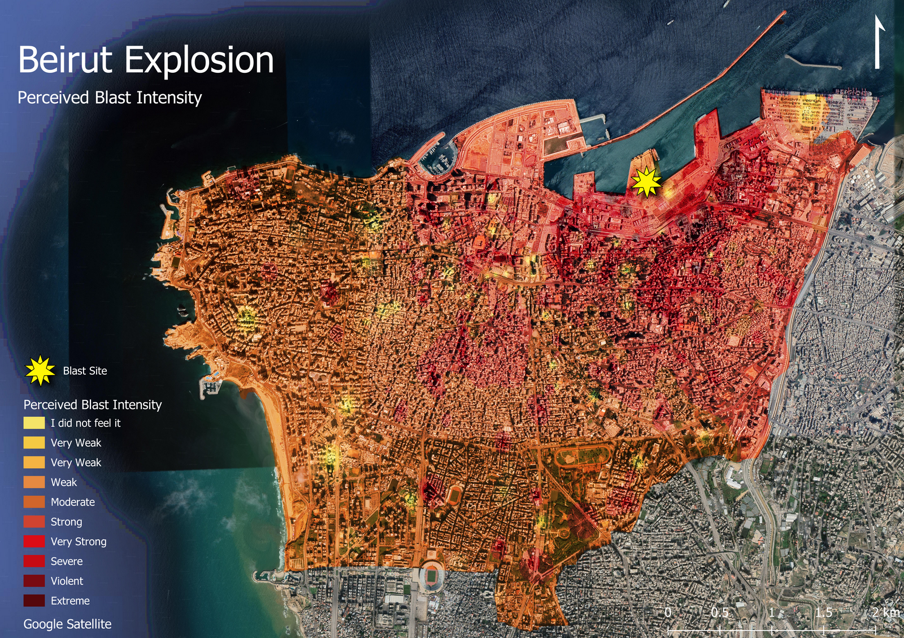

Reclaiming space for people: a street network analysis for the reorganisation of London’s streets and the implementation of the superblock model
Transport profiles of England and Wales
Classification of regions in England and Wales based on their transport characteristics, presented in a form of informative website and interactive map
The resilience of London Underground Network
Network analysis based on infrastructural network and commuting flows.
Streets of Camden
How woman-friendly is London borough of Camden? A street-level clustering analysis of public space.

Beirut Explosion
Perceived blast intensity. Spatial Interpolation
Multiple-criteria decision analysis
Multi-criteria evaluation of dwellings construction investment capability in Jadów commune